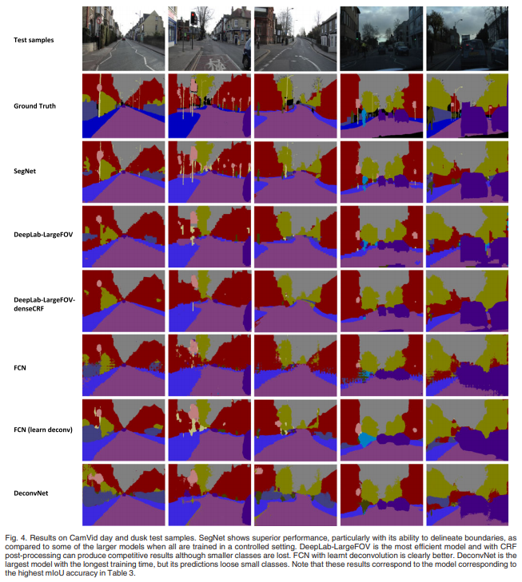
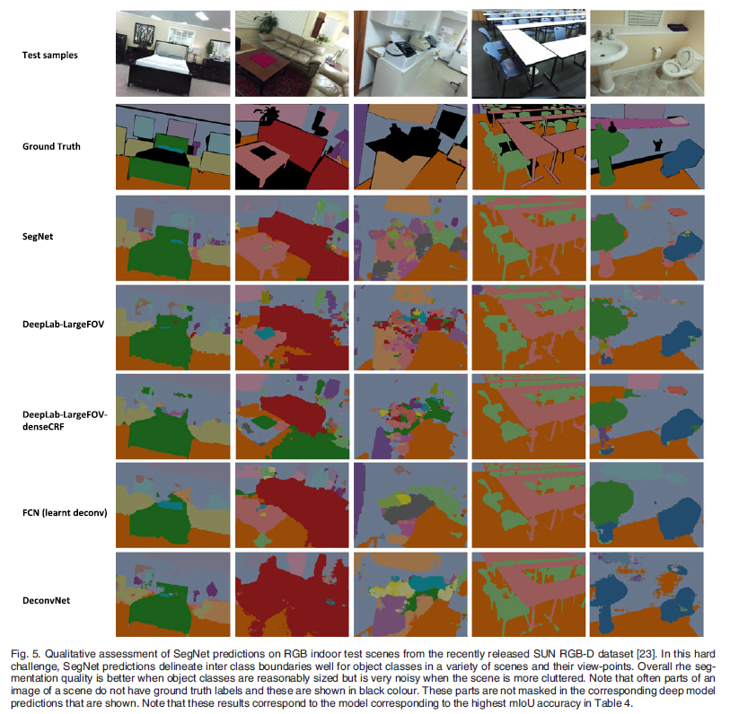

SegNet - TPAMI 2017
Contents
SegNet - TPAMI 2017#
Information
Title: SegNet: A Deep Convolutional Encoder-Decoder Architecture for Image Segmentation, TPAMI 2017
Reference
paper : https://arxiv.org/abs/1511.00561
reference : https://kuklife.tistory.com/120
reference : https://cool24151.tistory.com/m/92?category=932873
Review By: Junmyeong Lee (가짜연구소 논문미식회 2기)
Edited by: Taeyup Song
Last updated on Jan. 16, 2022
Contribution#
Unpooling 기법을 적용한 Encoder-decoder 구조의 Image segmenetation architecture를 제안
Skip-connection을 통해 feature를 decoder에 전달하는 것이 아닌, pooling index를 전달함으로써 적은 parameter로 효율적으로 동작함.
Proposed Method#
Encoder-Decoder 구조 채택

Fig. 26 SegNet architecture (source: arXiv:1511.00561)#
1. Encoder#
VGG-16 구조
VGG16과 위상적으로 동일함(같은 구조를 가짐)
→ 따라서, pre-trained baseline을 불러올 수 있고, 더욱 좋은 성능을 낼 수 있었음.
마지막 3개의 Dense Layer를 삭제. CNN layer들만 남김.
Image의 feature를 효과적으로 추출
High Res→Low Res로의 downsampling을 통해, parameter개수를 줄임.
2. Unpooling 기법#
Encoding된 feature map을 활용, Upsampling해서 최종 segmentation map을 생성한다.
Encoder에서 전달된 max-feature index + CNN을 사용하여 원래 해상도의 dense feature map으로 복원한다.
Boundary detail은 Segmentation의 품질을 위해 꼭 필요한 정보이다. 하지만, Encoding과정에서 max-pooling이 적용되며 이러한 detail들이 손실되기 때문에, 여러 아키텍처들은 문제를 해결하고자 방법을 강구하였다.
SegNet은 이 문제를 해결하기 위해, Max-pooling과정에서 가장 큰 값을 가지는 위치의 인덱스를 저장하고, decoder에서 이를 활용할 수 있도록 한다.
Max-pooling
shift와 같은 translation에 대해 강인하게 동작하도록 만들어줌.
But, downsampling에 따른 정보 손실, 특히 boundary 정보 손실이 일어남.
Storing max-value index
Max pooling step마다, 각각의 pooling window안에서 maximum 값을 가지는 feature pixel의 index를 저장
Feature map자체를 저장하여 decoder로 전달해주는 아키텍쳐(ex. U-Net)보다 메모리 효율성이 훨씬 좋다.
Accuracy는 조금 떨어지지만, 충분히 적용할 만한 정확도를 보장한다.
{kind=link}
Fig. 27 SegNet의 방법론과 기존 Encoder feature map 활용법의 비교. (source: arXiv:1511.00561)#
Summary
Boundary detail을 향상시킨다.
index만 저장하여 전달하기 때문에, 기존의 방법에 비해 적은 parameter를 사용하여 효율적이다.
모든 encoder-decoder형식에 쉽게 적용될 수 있다.
Performance#
1. Decoder에 따른 performance#
저자들은 논문에서 제시한 contribution을 검증하기 위해 여러 종류의 Decoder에 대하여 실험하였다.

실험 결과
Encoder feature map을 완전히 저장하여 decoder에 넣어주는 방법이 가장 좋은 성능을 보인다.
추론 과정에서 메모리가 한정되어 있다면, 차원 감소나 max pooling등을 통해 input map을 압축할 수 있고, 이를 적절한 decoder(ex. SegNet-type)와 함께 사용하여 성능을 향상시킬 수 있다.
어떤 encoder에 대해, 큰 decoder는 성능을 향상시킨다.
2. Road Scene Segmentation(CamVid dataset)#
(1) Quantitative result - 다른 Network들과 비교하였을 때, SegNet이 전체적으로 우수한 성능을 보인다. - SegNet, Deconvnet이 좋은 성능을 보여준다. - Deconvnet은 경계에 대한 설명력이 좋은 경향성을 보인다. - 하지만, SegNet이 연산량 측면에서 효율적이다.

(2) Quatlitative result - SegNet - 작은 물체도 잘 구분한다. - 가장 부드러운 결과를 내놓았다. - DeepLab 계열 - 가장 효율적인 모델이다. - CRF post-processing을 적용할 경우, 좋은 결과를 출력하지만, 작은 물체에 대한 정보가 사라진다. - FCN - Upsampling 방법을 bilinear → deconvolution으로 변경할 경우, 조금의 성능 향상이 있다. - SegNet에 비해 좋지 않은 성능을 보인다. - Deconvnet - 가장 큰 모델이다.(효율이 좋지 않다) - 작은 class에 대한 정보를 보존하지 못한다.
3. Indoor Scene segmentation(SUN RGB-D)#

(1) Quantitative result - SegNet이 다른 모델들과 비교하여 좋은 성능을 내지 못했다. - model들이 전체적으로 좋은 성능을 내지 못했다. - 많이 등장한 클래스에 대해서는 좋은 예측 결과를 보였다. (2) Qualitative result - 전체적으로 좋은 예측 결과를 보여주지 못했다. - 침대와 같이, 많이 등장한 class에 대해서는 SegNet이 좋은 결과를 보여준다.
